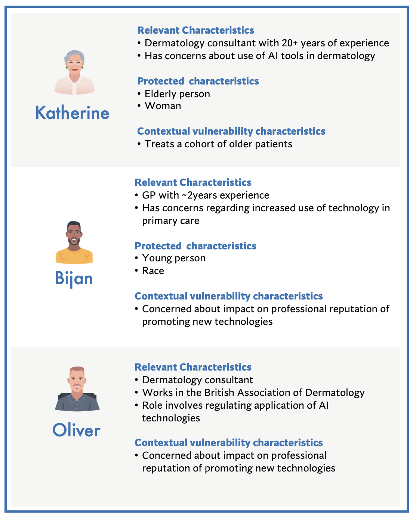
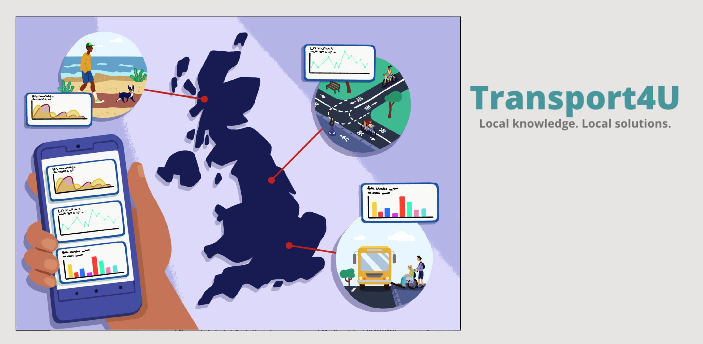
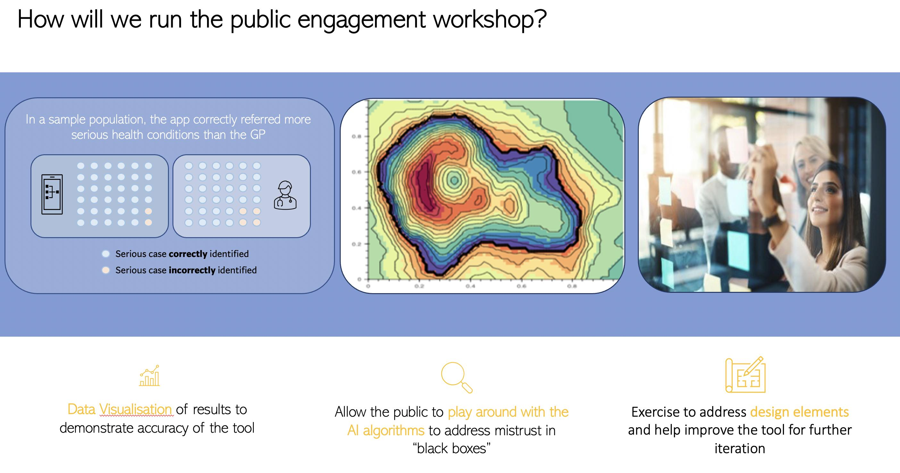

Peeling Back the Layers of Science and Technology¶
In April 2022, we ran our first week-long course on Public Engagement of Data Science and AI with 25 fantastic researchers from across the globe.
This post explores why we developed the course, outlines the activities we ran with the course participants, and concludes with next steps.
"Any sufficiently advanced technology is indistinguishable from magic."
Arthur C. Clarke's phrase was made famous in the context of his science fiction stories, which were full of futuristic and magical-seeming technologies and alien worlds that captured the imagination of many of his readers. But the advances of science and technological innovation that we see all around us in our everyday lives can also seem magical at times, as well as feeling bewildering and obscure. For many researchers and developers, a key goal of public engagement is about supporting people to dispel the feeling of bewilderment through increased knowledge and understanding, while still maintaining a feeling of enthusiasm and excitement about the many possibilities and opportunities to use science and technology to improve society. This is no easy task!
Course Summary¶
Therefore, over the course of a week in April 2022, 30 participants from different research disciplines joined a course being run as part of the Turing Commons project on 'Public Engagement of Data Science and AI'. It was organised around a series of structured presentations, seminars, and group activities, as well as a capstone project which involved a hypothetical public engagement project.
The course was designed with several learning objectives in mind, roughly split into two main sections. First, participants critically examined the practical and ethical values of public engagement with data science and AI. They explored what public engagement is and the different forms that it can take, as a way of creating a robust theoretical foundation. Next, the course turned to practical methods and tools for engaging with the public responsibly, such as how to carry out stakeholder analysis activities, structure a clear and accessible message, or communicate uncertainty in research.
To support these learning objectives, Sir David Spiegelhalter—Chair of the Winton Centre for Risk and Evidence Communication at the University of Cambridge—gave an excellent talk on trustworthy communication about data and algorithms. His presentation focused on the difficulties of interpreting (and therefore communicating) data and statistics, drawing on many examples from his public engagement work during the Covid-19 pandemic.
Designing a Hypothetical Case Study¶
A primary goal for the course participants was to develop a hypothetical public engagement project by the end of the course. Working in three smaller groups, the participants built upon the material covered each day through a series of activities that tested the skills they were acquiring in the course while also providing an opportunity to share their different perspectives with one another.
One of these activities was an in-depth stakeholder analysis focused on identifying, understanding, and analysing stakeholders, led by Cami Rincón (part of the Ethics and Responsible Innovation team). The exercise involved conducting a mock analysis intended to get participants thinking about the questions and issues they would confront were they to engage with stakeholders in a real project. For this, they had to identify affected stakeholders from a set of personas, build out their specific characteristics, and then scope the potential impacts of the project on them.
From there, and taking into account the different roadblocks and enablers that could impact potential stakeholders, the groups decided on a public engagement objective as well as which of the various public engagement method(s) they would use to achieve their goals.
 Example of hypothetical personas identified as impacted stakeholders for a group working on a skin condition triaging app.
On the final day of the course, the three groups presented their hypothetical project, supported by illustrations they had also co-designed with Eleonore Guerra.
 Illustration created by Eleonore Guerra for group working on a app which allows the local community to voice their views about local transport infrastructure.
During their capstone presentations, the groups introduced their hypothetical project, and discussed its main ethical implications. They also presented their stakeholder personas and the project's potential impacts on them. Taking all of this into consideration, they then defined their public engagement objective and method, and explained how they would (hypothetically) carry it out.
 Public engagement workshop plan taking into account the potential concerns of impacted stakeholders.
After the course ended, we asked participants for anonymous feedback on whether and how the course was useful for them. Overall, the course was incredibly well received:
Quote
Very clear presentations, guest speakers also added a great depth to the experience.
The activities and group work helped understand the course content really well so I would say that the activities are the highlights.
The teaching was very well thought out and enjoyed the interactivity aspect of the training.
Concluding Remarks¶
Public engagement is sometimes treated as an after-thought by researchers and scientists—something that is important for funding or building a career, but mainly an ancillary activity that exists at the borders of research and development. As such, opportunities to learn about its social and ethical value, and also put principles into practice, are limited.
This was the first time that this course was run, but as we continue to build out the content of the Turing Commons and grow its community, we hope that we will be able to both support and learn from more participants. In the meantime, a huge thanks to the first group who made the course such a pleasure to run.